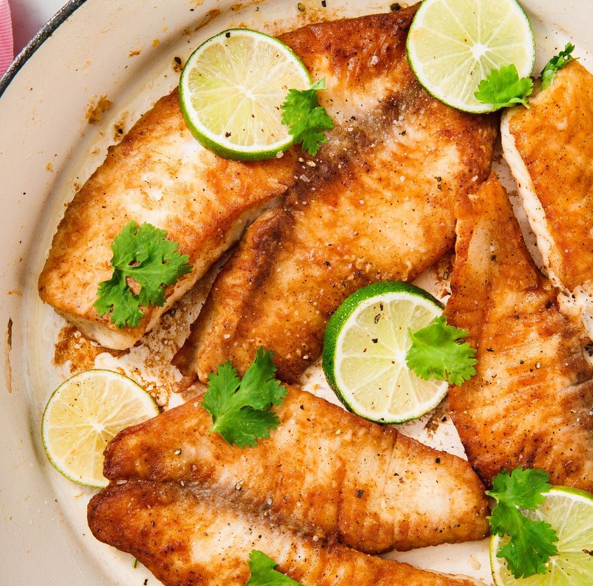

Learn how to cook tilapia with this easy, 15-minute recipe for pan-seared tilapia that's delicious and full of flavor. This simple method of cooking fish fillets is great for a weeknight meal. Serve with fresh veggies.
Rinse tilapia fillets in cold water and pat dry with paper towels. Season both sides of each fillet with salt and pepper.
Place flour in a shallow dish. Gently press each fillet into the flour to coat and shake off any excess.
Heat olive oil in a large skillet over medium-high heat. Cook tilapia fillets in the hot oil, in batches if necessary, until fish flakes easily with a fork, about 4 minutes per side.
Brush melted butter onto the tilapia fillets in the last minute before removing from the skillet.
Drizzle fillets with lemon juice and garnish with parsley and thyme.